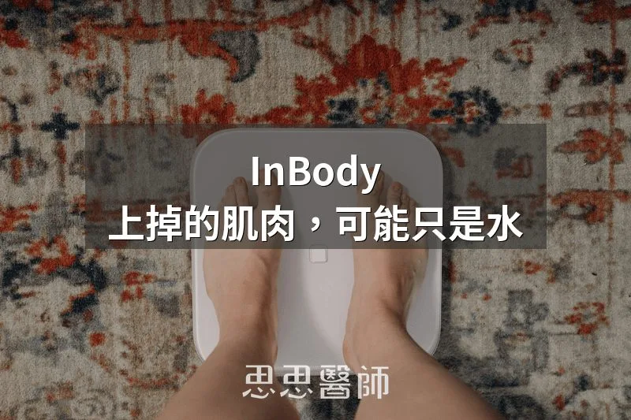
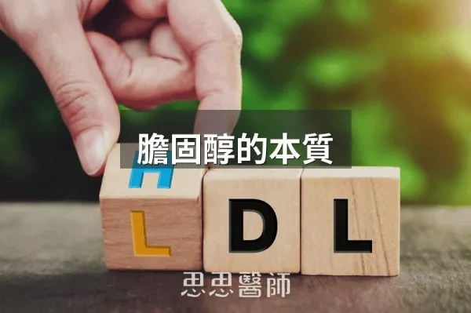

InBody 上掉的肌肉，可能只是水

很多人在門診把 InBody 報告推到我面前的時候，表情是有點慌的。體重往下、腰圍縮了、褲子鬆了、早上起床也不再昏沉，偏偏報告上那個肌肉量卻是下降的。接下來的問題幾乎都一樣：是不是蛋白質吃不夠？是不是減太快把肌肉減掉了？其實在胰島素阻抗正在改善的這個階段，這個數字下降不但不奇怪，反而常常是身體正在往回走的證據。要理解這件事，得先知道 InBody 到底在量什麼。
InBody 這類生物電阻抗分析（Bioelectrical Impedance Analysis, BIA）的機器，並沒有真的「看到」你的肌肉。它做的事情是放一道很微弱的電流通過身體，量電流走得順不順。身體裡導電的主角是水和電解質，脂肪幾乎不導電。機器量到阻抗之後，再用公式回推你有多少水、多少去脂體重（Lean mass）、多少脂肪。所以有一件事必須先講清楚：水分的變化，在這台機器眼裡會直接變成肌肉量的變化。當你的水分重新分配，報告上的肌肉數字就一定會跟著動。
那為什麼胰島素一降，水就會走？胰島素本身就有「拉著水走」的能力，而它抓水的方式是先抓鈉。1975 年 DeFronzo 團隊發表在《Journal of Clinical Investigation》的經典人體研究就證實了這件事：在血糖維持不變的前提下單獨給予胰島素，腎臟排出鈉的量會明顯減少，水自然跟著留下來。這也是為什麼高胰島素的人常常覺得身體悶、腫、卡卡的，戒指緊、腳踝有壓痕。當你調整飲食、藥物開始起效，胰島素不再整天亢奮，腎臟就鬆手，這些長期放錯地方的水才終於排得掉。而這些水是從細胞外空間退下來的，InBody 會把它算在 Lean mass 裡，所以報告看起來就像肌肉跑掉了。
另一個很容易被忽略的角色是糖原（Glycogen）。糖原是身體儲存醣類的形式，它像海綿一樣會抱水，一克糖原大約帶著三到四克的水。以前吃得比較高碳、胰島素反應大的時候，肌肉裡的糖原是滿的，水一起被留住，那時候 InBody 上的肌肉量看起來很漂亮。當你開始減醣、血糖波動變小、身體不需要囤那麼多糖原，水也跟著放掉。報告上少掉的那一兩公斤「肌肉」，多半是這些水離開，而不是肌肉蛋白真的被分解掉。
慢性高胰島素還會讓微血管比較容易漏水，把水推到細胞外的空間去。這就是為什麼很多代謝狀況不好的人，身形看起來鬆軟、扎實度不足，明明肌肉量的數字不低，摸起來卻沒有相應的硬度。等到胰島素阻抗改善、發炎往下走，細胞外的水退回原位，整個人其實是變緊實的。但 InBody 只會忠實地把這個「水腫消掉」的過程記錄成肌肉縮水。
如果你想看得再細一點，報告上有一欄叫做 ECW/TBW（細胞外水量佔總體水量的比率），有些機型直接標成「水腫指數」。InBody 原廠給的參考切點是 0.400，數字偏高代表你的水比較多待在細胞外。不過要提醒的是，2020 年《Clinical Nutrition》的一篇研究就指出，這個切點會因為族群和想預測的結果而不同，它是拿來看趨勢的，不是拿來判生死的。在代謝改善的過程中，ECW/TBW 往下掉、同時肌肉量數字也往下掉，這個組合幾乎就是在告訴你：走掉的是水。
那到底要怎麼分辨「掉的是水」還是「真的掉肌肉」？我在診間會看這幾件事：
1. 力量有沒有退步。深蹲、硬舉、伏地挺身的次數，或是提得動幾公斤的菜。真的流失肌肉，力量會先誠實反映出來，水走掉則不會。
2. 體圍和外型。腰圍縮了、臉不再腫、褲子鬆了但人看起來更結實，這是水退的樣子；如果是肌肉流失，四肢會明顯變細、人會顯得乾癟。
3. 蛋白質和阻力訓練有沒有跟上。這兩件事只要有做，在減脂前期要真的掉肌肉其實沒那麼容易。
4. 趨勢而不是單點。一次的數字幾乎沒有意義，要看三到六個月的曲線。
還有一件很實際、卻常常被忽略的事：量測條件要固定。InBody 對水分太敏感了，喝完水、剛運動完、吃飽飯、經期前後、前一晚吃了鹹的，數字都會跑。盡量固定在同一台機器、同一個時段、空腹、上完廁所、沒有剛運動完的狀態下量。條件不一樣，前後兩張報告本來就不能直接比。
所以下次看到 InBody 顯示肌肉下降，先不要急著怪飲食、怪蛋白質、怪自己運動做錯了。在改善胰島素阻抗的前段，水分、糖原、發炎狀態會同步重新調整，這個現象幾乎是必然的。我始終認為，腰圍、力量、睡眠品質、血糖與胰島素的變化，比 InBody 上那一格數字更能告訴你身體正在往哪裡走。數字是拿來理解身體的工具，不是拿來嚇自己的。
參考資料
（本文由我規劃架構與觀點，並協同 AI 校正與潤飾語句）
 空腹小雞跟思思醫師一起斷食，順便養一隻小雞來養小雞 →
空腹小雞跟思思醫師一起斷食，順便養一隻小雞來養小雞 →
好朋友週信
一週一封：《健康駭客週報》這集的研究重點，加上家醫專欄這週的新文章。免費，隨時可以退訂。
延伸閱讀

酮體讀數越高越好嗎？
酮體數值高低不代表脂肪燃燒效率，脂肪適應後血酮可能降低但脂肪燃燒仍活躍，應用血糖酮體指數和身體感受評估酮症效果。

如何測量酮體呢
測量酮體有三種方式，尿酮最便宜但最不準確只在生酮初期測得，血酮最準但需扎針且費用較高，氣酮最方便但機器昂貴，每個人的酮體基準不同無需互相比較。

膽固醇的本質
膽固醇只有一種，LDL與HDL是運輸的脂蛋白，應關注小而密LDL的氧化風險而非單純膽固醇濃度。